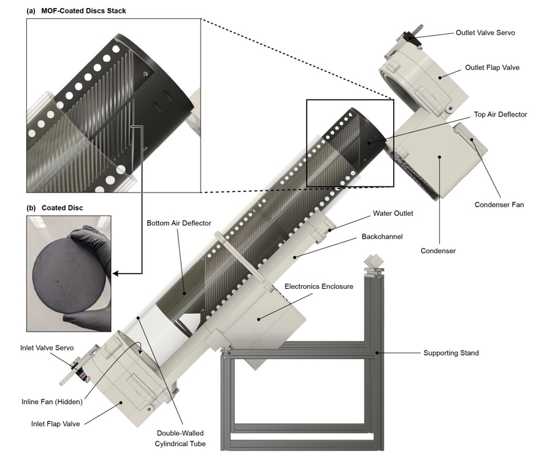

July 2026
An Autonomous Off-grid MOF Water Harvester for Extreme Arabian Desert Conditions
A short note on translating a material discovered in the lab into an actual working device in the field.
Preprint: https://chemrxiv.org/doi/abs/10.26434/chemrxiv.15006110/v1
We built an autonomous, off-grid water harvester that operates under extreme desert conditions, w/ some days during field testing seeing midday temperatures reach ~50 °C, RH drop close to 5%, and very high wind speeds.
This is also a nice example of how a material discovered in the lab can be translated into an actual working device in the field.
Key takeaway
While it may seem that high desert temperatures would lead to rapid heating of the MOF (which is important for desorbing the adsorbed water), this is not always true. Under such harsh desert conditions, windblown sand attenuates the solar irradiance reaching the device, while high wind speeds can also increase heat loss. This can lead to slower heating and a slower rate of water collection, reducing the total amount of water collected over the course of a day.
Field videos
- Weather conditions during field testing.
- The device generating water.
- Daniel drinking the collected water.
Online version: https://www.nakulrampal.xyz/blog/water-harvester.html
